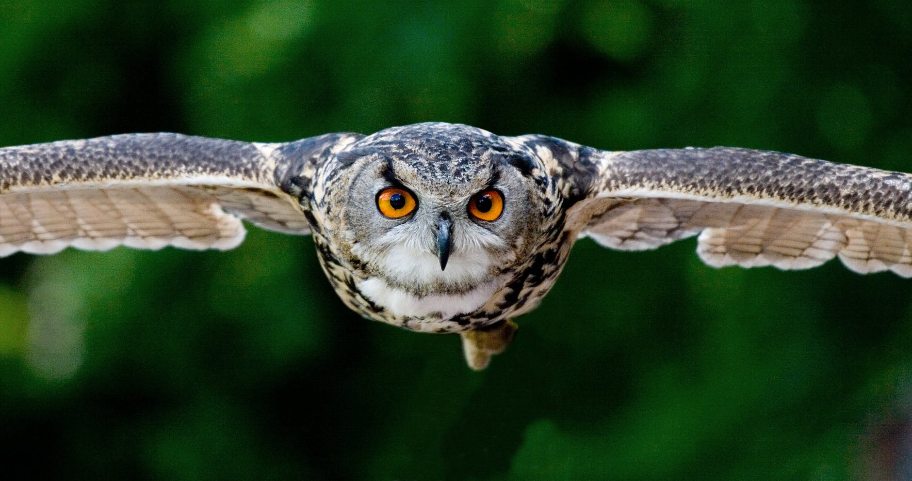

Europa
Sowa
Ptak drapieżny przystosowany do polowania w nocy i po zmroku. Rozpiętość skrzydeł sowy puchacza może osiągnąć nawet 2 metry!
Upierzenie sów ma zwykle maskujący wzór, w kolorystyce szarej lub brązowej. Gatunki zamieszkujące daleką północ, jak sowa śnieżna, są przeważnie białe, co na śniegu również spełnia funkcję maskującą.
Sowy słyszą w przedziale 50–21000 Hz. Dla porównania człowiek słyszy w przedziale 16-20000 Hz.
Oprócz dobrego słuchu sowy charakteryzują się również doskonale rozwiniętym wzrokiem, dostosowanym do widzenia w słabym oświetleniu. W porównaniu do człowieka oko sowy jest 2,5 raza bardziej czułe na światło.